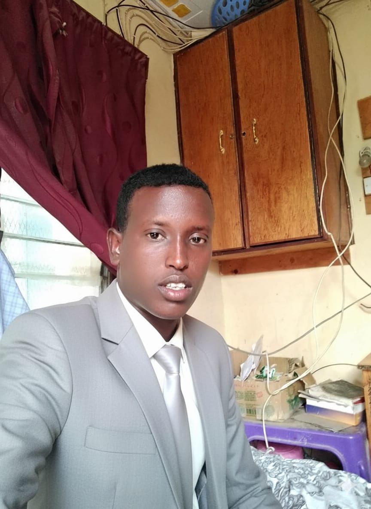

My name is Haret Ismail, and I am passionate about becoming an expert in the field of web development. I am highly motivated to learn and grow my skills in order to build a successful career in tech.
I have completed my primary, O-Level education and later attended a technical college to further my training. My background in technical education has laid a strong foundation for problem-solving and hands-on work. Here is a breakdown of my education background:
I currently work at the Wajir County Water Department, where I have gained valuable experience in team collaboration and public service. This role has also helped me develop a strong work ethic and attention to detail.
I possess practical skills in plumbing and have earned Grade 3, Grade 2, and Grade 1 certificates. I am now actively working on expanding my web development skills including HTML, CSS, and JavaScript.
I have been awarded plumbing certificates for all three grades, recognizing my dedication and progress in a technical field. These certifications show my commitment to learning and achieving goals step by step. Here is the breakdown: